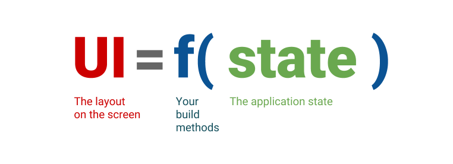

Modern Application Development II - Week 3
Note
Click here to view in presentation mode: Modern Application Development II - Week 3
Frontend Implementation
What is the frontend?
- User-facing part of the application
- User Interface (UI) and User Experience (UX)
- Requirements
- Avoid complex logic - application logic should be in the backend
- No data storage
- Work with stateless nature of HTTP
- Desirable
- Aesthetically pleasing
- Responsive - no lag/latency
- Adaptive - different screens
Programming Styles
- Imperative: sequence of actions to achieve final result
- Draw boxes for navigation, main text, fill in text, wait for clicks etc.
- Functions for each step, composition of functions
- Declarative: specify desired result
- Compiler/Interpreter knows how to achieve result
- Function integration automated

State?
- Internal details of system: memory
- Reproducibility
- Given a “system state”, the system should always respond the same way to input
- Complexity
- Any non-trivial application needs internal state
System State
- Complete database of amazon.in, flipkart.com
- Stocks of available items, prices, logged in/register users, etc.
- All news articles ever published on toi.com, thehindu.com, bbc.com
- All students, courses, marks, certificates, etc. for NPTEL
Typically huge, but comprehensive
- Completely independent of the user interface/frontend!
Application State
Application:
- System as seen by an individual user/session
- Includes interactivity, session management
Examples:
- Shopping cart, user preferences, theme
- Followed news items, recommendations
- Dashboard displays
UI State (Ephemeral State)
UI:
- Part of application actually seen/intereacted with
- Ephemeral - “lasting for a very short time” (term used by Flutter)
Examples:
- Loading icons
- Currently selected tab in multi-tab document/page
Application and UI management
- HTTP is stateless
- How to convey state between client and server?
- Client maintains state - sends requests to server for specific items
- Server maintains state - only specific requests allowed to client
Example: Tic-Tac-Toe
- What to display on screen?
- Who determines the display?
- How should user input be collected and processed?